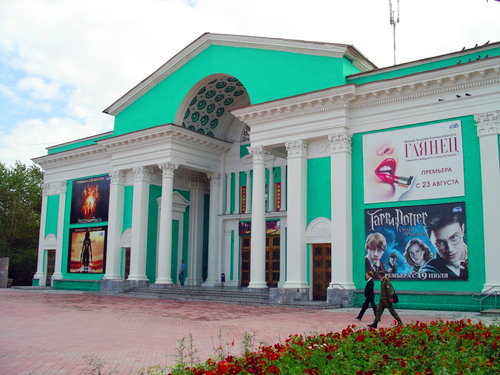

Кинотеатр "Ретро"  Google Maps
Google Maps

В 1958 году построен кинотеатр «40 лет Октября». Первым его директором стал В. П. Заплатин. Первая киноаппаратура работала на углях, затем была «Родина», а с 1994 года начался показ стереоскопических фильмов. В 1991 году городским оргкомитетом был проведён конкурс на новое название кинотеатра. Новым именем кинотеатра-«Ретро»-стало для кинотеатра название, предложенное Н. И. Волковой.
Кинотеатр «Ретро» причислен к культурным памятникам советского периода, 26 августа 2011 год в День Кино в кинотеатра Ретро было протестировано и запущено в эксплуатацию специальное оборудование для просмотра объемного кино (3D.)
Для маленького города это серьезный шаг вперед в развитии культурно-досуговой деятельности. В кинотеатре Ретро работает кафе «Стоп кадр».
2 зала, 3D на 176 мест и 154 места. В кинотеатре установлено современное 3D-оборудование. 3D система DOLBY 3D DIGITAL предлагает впечатляющее качество трехмерной демонстрации – реалистичную цветопередачу и четкое, чистое изображение, независимо от местоположения в кинозале. А 10-метровый экран с повышенным коэффициентом светоотдачи – гарантируют зрелище превосходного качества. Репертуар кинотеатра составлен только из фильмов класса «А».